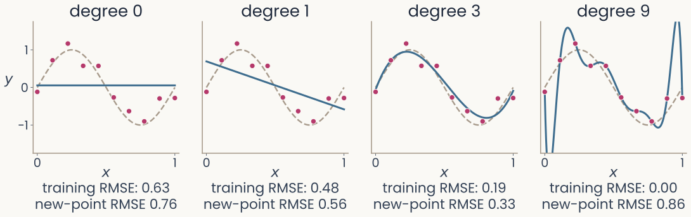
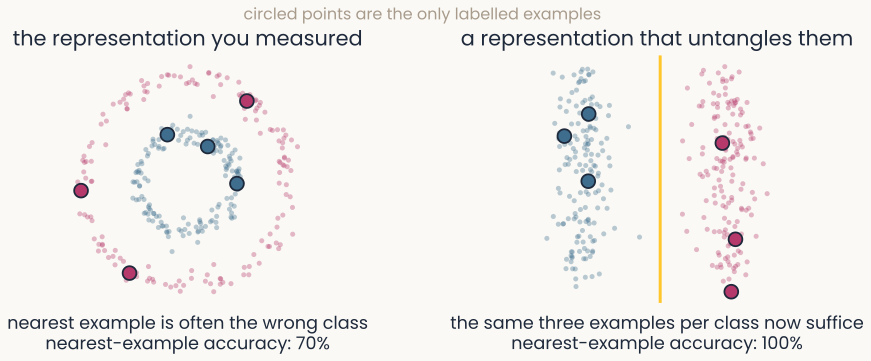
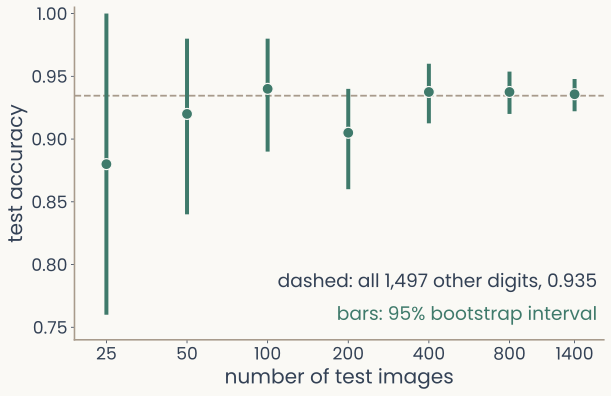
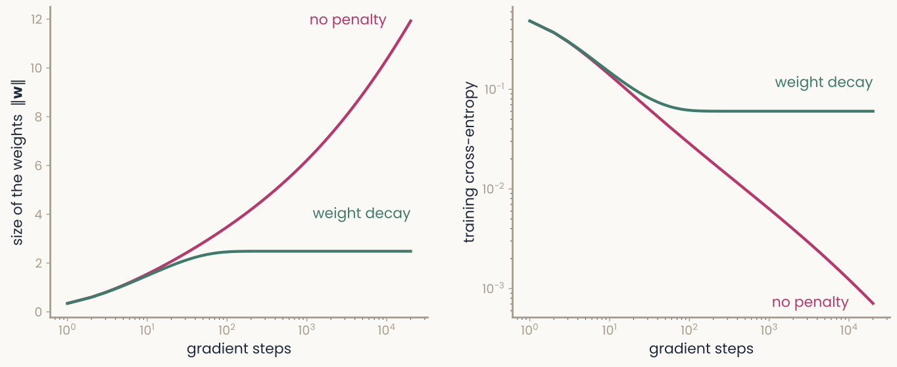
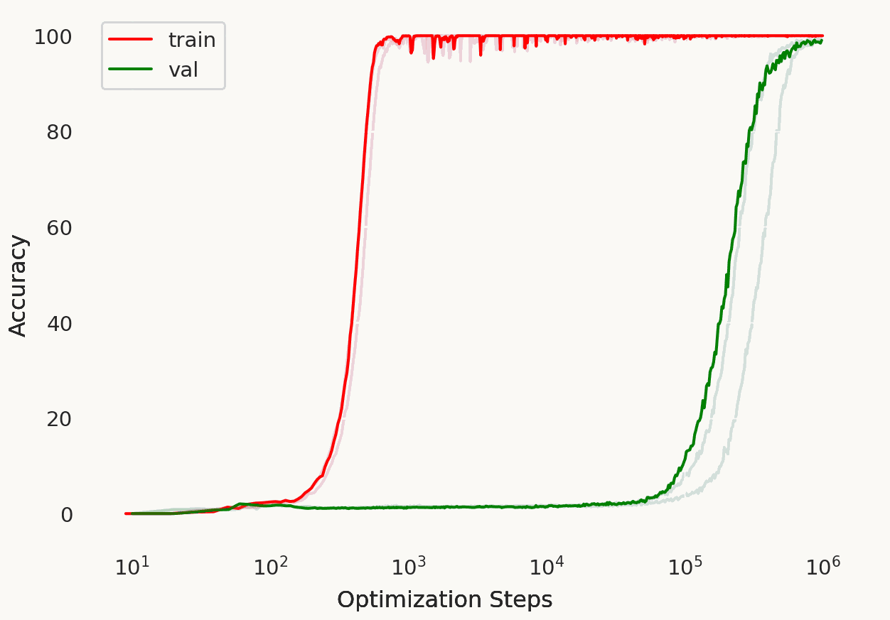
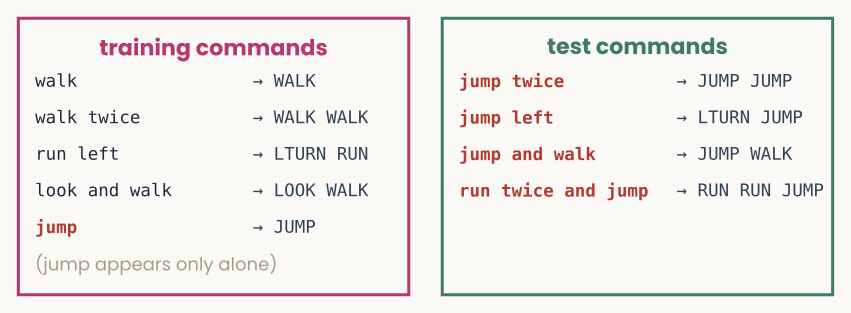

Training at scale, characterizing units & generalization
Reader-friendly version of the 44 lecture slides: the lecture content in normal flow, with figure descriptions and data tables where the figure carries data. Open the presentation.
Slide 1

Training at scale, characterizing units & generalization
Slide 2
How do you train on a million images without one giant step?
Slide 3
Minibatches: a gradient from a few examples at a time
- Full batch: the gradient over all training examples at every step. Exact, but slow for large
- Minibatch: shuffle the data, then take one step per batch of examples (often 32 to 256). One step is also called an iteration or update; an epoch holds many
- Each minibatch gradient is a noisy estimate of the full one. It is much cheaper, and the noise can help the weights escape shallow dips in the loss
- With this is the original stochastic gradient descent (PyTorch's
optim.SGD: this step at any batch size)

Twelve numbered training examples in order, then the same twelve shuffled, then cut into three batches of four; each batch is one step, and the three steps make one epoch; the next epoch shuffles again
Open full-size figureSlide 4
Shrink the step: learning-rate schedules

Two stacked panels. Top: the learning rate against step for four schedules: constant, step decay that halves it at fixed intervals, 1 over 1 plus t over tau, and cosine decay. Bottom: the training loss for each; the shrinking schedules settle lower and more smoothly than the constant one
Open full-size figure- Noisy minibatch gradients: a constant step keeps bouncing; too large overshoots, too small crawls
- A schedule lowers during training: large steps early, small late. Top: step sizes; bottom: losses (dashed: the lowest possible)
- Step decay halves at fixed intervals (every 200 steps here). Cosine lowers it smoothly to near 0. shrinks it a little at every step ; sets how soon the shrinking starts
- In the last-200-steps inset, the shrinking schedules fluctuate less
Slide 5
Adam: the most popular optimizer
θ: all weights and biases · operations are per weight · Adam's first-step correction omitted
- Momentum (): a running average of recent gradients. The noisy parts of successive minibatch gradients cancel; a consistent direction adds up
- A step size for each weight (): each weight's step is divided by the typical size of its own gradient. Weights with small gradients still move, and large gradients are scaled down
- and set how much of each running average is kept at every step. The defaults, and , work on most problems. , a tiny number, prevents division by zero
- Usually fewer steps to a low loss than plain gradient descent, but it still needs a learning rate
Slide 6
The learning rate, measured

Training loss on a log scale against epoch for four learning rates. At 10 to the minus 5 the loss stays flat near 2.3 (test accuracy 0.16); at 10 to the minus 3 it falls steadily to about 0.16 (test 0.96); at 10 to the minus 2 it falls fastest, below 0.01 (test 0.98); at 1 it stays flat near 2.3 (test 0.11)
Open full-size figure- Four runs of one network (64 ReLU hidden units) on handwritten digits, differing only in ; "test" = accuracy on held-out images
- Too large a step can switch a ReLU unit off on every input: a dead unit
- Too small: the loss barely moves. Too large: it sticks at chance (−log 1/10 ≈ 2.3); the units died
- The range that works spans orders of magnitude, so sweep on a log scale, and sweep it first
Slide 7
Characterizing neurons, biological and artificial
What do the units of a trained network respond to, and how do we measure the same in neurons?
Slide 8
Measuring a tuning curve

Top: the weights of four hand-built units, three Gabors at different orientations and window lengths, labelled with orientation selectivity indices 1.00, 1.00 and 0.90, and a centre-surround unit with index 0.00. Bottom: their tuning curves to gratings at 24 orientations, each scaled to its peak; the three Gabors peak at different orientations, the long one narrowly, the short one broadly, and the centre-surround unit is flat
Open full-size figure- Show a unit gratings (light and dark stripes) at many orientations, as we would show a monkey, and record its response. Here, four units built by hand
- Top: each unit's weights, its receptive field (the input pattern that drives it). A Gabor is a grating seen through a smooth (Gaussian) window
- Orientation selectivity index (OSI), (max − min) / (max + min) of the responses: near 1 when the weakest response is near zero. Bandwidth: the half-width of the tuning curve at half its height
- A and C both have indices near 1, yet C is far more broadly tuned: the index does not measure tuning width
Slide 9
Rectify before you average over phase

Bar chart for one Gabor unit and a grating at its preferred orientation shown at four phases: the weighted sums are plus one, plus one, minus one, minus one and average to zero; after rectifying, the responses are one, one, zero, zero and average to one half. Thumbnails of the four gratings and of the unit's weights sit under the bars
Open full-size figure- A grating also has a phase, where its stripes sit. Shift them half a cycle and the weighted sum flips sign; averaged over phase, the sums cancel
- Rectify first, with a ReLU, and the average keeps the unit's preference. Rectifying stops positive and negative sums from cancelling
Slide 10
Describing a receptive field with a Gabor

Left, a toy receptive field with pixel noise, the Gabor fitted to it, and the residual, which is only noise; R-squared 0.87. Right, three noise-free toy Gabors: A with nx 0.20 and ny 0.20, a small spot; B with nx 0.35 and ny 0.50, a few short stripes; C with nx 0.90 and ny 1.20, many long stripes
Open full-size figure- Fit a Gabor to each receptive field. The residual is the field minus the fit. Score the fit with : one minus the residual's squared size over the field's squared spread around its mean; 1 for a perfect fit
- Keep two numbers: width across the stripes and length along them, both in cycles of the stripes. A is a spot smaller than one stripe; C holds many long stripes
Slide 11
One template, slid over the image: a feature map
- A first-layer filter is a small template of weights: in AlexNet, 11 × 11 pixels × 3 colours
- Its weighted sum over one image patch (a dot product) gives one number. Slide the template across the image and the numbers, one per position, form a feature map
- The same weights are used at every position. The step between positions is the stride
- The next lecture, on the visual system, teaches this operation, convolution, in full
Slide 12
Where V1 simple cells sit

Scatter of Gabor width nx against length ny, both in cycles, for 93 macaque V1 simple cells: most cluster near the origin, below about 0.6 on both axes, with a few longer fields. Three blue stars mark the toy units A, B and C of the Gabor-fit slide: A and B sit among the cells, C lies beyond most of them
Open full-size figure- Ringach (2002) fit Gabors to 93 simple cells of macaque V1 (cells that respond to a grating only at some phases) and released the fits
- Most cells sit below 0.6 on both axes (medians 0.32 and 0.41): a window of one or two stripes
- Toy unit C, with many long stripes, lies beyond most real cells
- The same two numbers can place any receptive field on this plot, a network unit's included
Slide 13
How selective for objects? One IT site at a time

Responses of two IT sites to 51 objects, 24 views each: dots for single views, bars for object means. Site A, object selectivity index 0.60, has object means that differ widely, highest for a swan, shown as a thumbnail; site B, index 0.22, has object means that barely differ compared with the spread of the views
Open full-size figure- A deeper unit's weights are not an image, so we measure selectivity from responses. Show each object from many views, and split the variance of one IT site (one electrode's recording) into between objects and within an object
- Object selectivity index = between / total: near 1 when the response depends on which object, near 0 when the object means barely differ compared with the spread of the views
- Compare the spread of the bars (object means) with the spread of the dots (views) in each plot
- This ranks units by how they respond. Whether a unit is needed is another measurement: next slide
Slide 14
Is a selective unit needed? Remove it and see
- Selectivity: how a unit responds. Necessity: what a readout loses without it. Different measurements
- Ablation: set a unit's activity to zero and measure the drop in a readout's accuracy
- Control: remove the same number of randomly chosen units. Selective units matter more only if removing them costs more than removing random ones
- Keep the readout fixed, and you ask whether it relied on those units. Refit it, and you ask whether the remaining units can still separate the classes
Slide 15
Generalization
Learning is not memorizing the training set. It is doing well on data you have never seen.
Slide 16
A perfect training score can hide poor generalization

Two panels for a readout of animate versus inanimate from 480 monkey IT neurons, trained on 102 images and tested on 306. Left: accuracy bars; with true labels, training 1.00 and test 0.96; with shuffled training labels, training 1.00 and test 0.56 on average, below a dashed majority-class line at 0.63. Right: histogram of the test accuracy over 1,000 label shuffles, centred near 0.55, with its 95th percentile marked near 0.67 and the true-label test accuracy, 0.96, far to the right
Open full-size figure- The baselines lecture: a probe (readout) of animate vs inanimate from 480 IT neurons, 102 training images. Shuffled labels fit perfectly, yet scored 0.56 on new images (true labels: 0.96)
- Generalization gap: how much worse a model does on new data than on its training data, training accuracy minus test accuracy
- When does a fit carry over to new data? How do we measure and improve it?
Slide 17
When does a fit carry over to new data?
Slide 18
Too rigid, or too flexible

Four panels, each with the same 10 magenta points scattered around a dashed sine-shaped curve, and a blue fitted curve. Degree 0: a flat line, training error 0.63, error on new points 0.76. Degree 1: a falling straight line, 0.48 and 0.56. Degree 3: a curve close to the dashed one, 0.19 and 0.33. Degree 9: a curve through every point that swings far off between and beyond them, training error 0.00, error on new points 0.86
Open full-size figure
Computed: 10 noisy samples of a sine curve, after Bishop (2006), Fig. 1.4
- A polynomial adds powers of ; its degree, the highest power, sets how flexible it is
- Underfitting: too rigid to follow the curve. Overfitting: fitting the noise in the training points
- Errors are RMSE, the typical vertical error in units of . Training error keeps falling, while error on new points falls, then rises again (minute paper)
Slide 19
Same model, more examples

Four panels of the same degree-9 polynomial fitted to more and more noisy points from the dashed sine-shaped curve. N equals 10: the curve swings far off, error on new points 0.86. N equals 15: close to the dashed curve, 0.34. N equals 30: 0.35. N equals 100: the fitted curve follows the dashed one, training error 0.28, error on new points 0.31
Open full-size figureComputed: the same curve and noise, after Bishop (2006), Fig. 1.6
- The same degree-9 polynomial, fitted to 10, 15, 30 and 100 points from the same curve
- With 10 points it passes through every one; with 100 it cannot, and follows the curve instead
- Overfitting depends on flexibility relative to the number of examples
Slide 20
Many dimensions, few examples

Accuracy against the number of input dimensions on a log axis, from 1 to 1024, with 100 training points. Training accuracy, in magenta, stays near 1.0 throughout. Accuracy on new points, in green, starts at 1.0 and falls to about 0.58 at 1024 dimensions; the shaded gap between the curves widens. A dashed line marks 100 dimensions, as many as training points
Open full-size figure- A linear readout of 100 training points. The label depends on one input dimension; the rest are noise
- Training accuracy stays near 1.0; accuracy on new points falls toward chance
- The curse of dimensionality (baselines lecture): the examples needed grow quickly with the number of dimensions. With 1,024 weights and 100 examples, the readout fits the training labels partly through the noise dimensions
- The fix: a representation, or a limit on the readout, that ignores the irrelevant dimensions
Slide 21
Generalization happens in a space

The same labeled examples in two representations: interleaved ring-shaped classes make the nearest example the wrong class, while a better representation separates them
Open full-size figure
- Shepard (1987): for people and pigeons, generalization between two stimuli falls off exponentially with their distance in psychological space
- Sorscher et al. (2022): object-manifold geometry predicts how many examples a readout needs
- The same examples can be too few in one representation and enough in another
Slide 22
How do we choose a model without fooling ourselves?
Slide 23
Three data splits

A horizontal bar split into three parts. Training, the largest part, in magenta: fit the weights. Validation, in green: choose settings and when to stop. Test, in dark grey: report once, at the end
Open full-size figure- Training set: the network adjusts its parameters on it
- Validation set: measures generalization while you develop the model. Use it to choose when to stop and the hyperparameters: settings fixed before training, such as the learning rate
- Test set: used once, at the end. Never choose anything on the test set, or its score is too optimistic
Slide 24
Learning curves: when to stop training

Two panels against epoch, 0 to 400, for a network trained on 200 handwritten digits, a fifth of their labels replaced at random. Left, loss: training loss in magenta falls steadily to near 0; validation loss in green falls at first, is lowest near epoch 83, then rises to about 0.68. Right, accuracy: training accuracy rises to 1.0; validation accuracy is highest, 0.90, at epoch 44, marked by a dashed line labelled checkpoint kept, and drifts down to about 0.83. A dotted line marks chance at 0.1
Open full-size figure- 200 training digits, 37 labels redrawn at random: validation turns as the network fits the wrong labels
- Early stopping: stop when the validation score stops improving. Keep the checkpoint (saved parameters) with the best validation score: accuracy here, epoch 44; by loss it would be 83
Slide 25
In PyTorch: keep the best checkpoint
best_acc = -float("inf")
for epoch in range(num_epochs):
model.train() # training mode
for X, y in train_loader:
optimizer.zero_grad()
loss_fn(model(X), y).backward()
optimizer.step()
model.eval() # evaluation mode
with torch.no_grad():
correct = sum((model(X).argmax(1) == y).sum().item()
for X, y in val_loader)
val_acc = correct / len(val_loader.dataset)
if val_acc > best_acc: # a new best: save a checkpoint
best_acc = val_acc
torch.save(model.state_dict(), "best.pt")
model.load_state_dict(torch.load("best.pt"))
Slide 26
How sure is a test accuracy?

Test accuracy of one readout of handwritten digits against the number of test images, 25 to 1,400, on a log axis. Each point has a vertical bootstrap interval. With 25 test images the interval runs from 0.76 to 1.00; with 1,400 from 0.92 to 0.95. A dashed line marks the accuracy on all 1,497 other digits, 0.935
Open full-size figure
- One readout, trained on 300 handwritten digits; the dashed line is its accuracy on all 1,497 other digits
- The bootstrap (baselines lecture): resample the test images with replacement and recompute the accuracy; the bar holds the middle 95% of the results: a 95% confidence interval for the accuracy
- With 25 test images, 0.76 to 1.00; with 1,400, 0.92 to 0.95
- The interval covers one source of variation: the draw of test images
Slide 27
A ranking is not an identification
- Two models can score the same on brain data, or within each other's confidence intervals
- Even a clear ranking says which model fits better on these images. It does not say which model is right
- To tell models apart, choose stimuli on which they disagree: controversial stimuli, designed or selected so that the models make different predictions
- Golan et al. (2020) synthesized images that one network classifies as one digit or object and another network as a different one, then asked people which network they agreed with
Slide 28
How do we make a network generalize better?
Slide 29
A penalty on the weights

Four panels of the degree-9 polynomial fitted to the same 10 points, with an increasing penalty. No penalty: through every point, swinging far off, error on new points 0.86. Lambda 10 to the minus 7: a smooth curve close to the dashed one, 0.34. Lambda 10 to the minus 3: smooth, 0.34. Lambda 1: an almost flat line, training error 0.49, error on new points 0.61
Open full-size figureComputed: the 10 points of the first example, after Bishop (2006), Fig. 1.7
- Regularization: giving up some training fit to do better on new data. With this penalty, weight decay, error on new points falls from 0.86 to 0.34. Too large a underfits
Slide 30
Without a penalty, a readout's weights keep growing

Two panels for logistic regression on separable 2-D data. Left: the size of the weights against gradient steps on a log axis; without a penalty it keeps rising to about 12, with weight decay it levels off near 2.5. Right: the training cross-entropy; without a penalty it keeps falling toward zero, with weight decay it levels off near 0.06
Open full-size figure
- Separable classes: a longer means a more confident readout and a lower loss, so keeps growing
- A penalty stops it. Both readouts classify every training point; the penalty limits their confidence
Slide 31
A model of a neuron: regression with a penalty
![Two panels for one monkey IT recording site and 512 features of the trained network's late layer. Left: predicted against recorded responses for a ridge fit; training images faint grey, held-out images red, both scattered along the diagonal, R-squared 0.71 on training and 0.69 on held-out images. Right: R-squared against the penalty lambda on a log axis; with almost no penalty, training R-squared is 0.85 and held-out R-squared 0.28; as the penalty grows, training R-squared falls while held-out R-squared rises to meet it near 0.69 at the penalty chosen on the training images, then both fall](../images/L07/encoding_fit_heldout.svg)
Two panels for one monkey IT recording site and 512 features of the trained network's late layer. Left: predicted against recorded responses for a ridge fit; training images faint grey, held-out images red, both scattered along the diagonal, R-squared 0.71 on training and 0.69 on held-out images. Right: R-squared against the penalty lambda on a log axis; with almost no penalty, training R-squared is 0.85 and held-out R-squared 0.28; as the penalty grows, training R-squared falls while held-out R-squared rises to meet it near 0.69 at the penalty chosen on the training images, then both fall
Open full-size figureComputed: one monkey IT site (Bao et al. 2020), 1,224 object images, 512 late-layer units of ResNet-18; a random fifth held out
- Ridge regression: a weighted sum of the 512 units plus a bias (a linear regression), fit with the weight penalty. Choose within the training images, score on held-out ones
Slide 32
Altered copies, and switched-off units

Four versions of one photograph of a pink orchid: the original; flipped left to right; cropped and enlarged; and with its colour faded and raised
Open full-size figure- Data augmentation: train on altered copies of each image that keep its label. Each epoch shows a different version of each image, which makes memorizing harder
- Dropout: at each training step, switch off a random fraction of the hidden units (often half), so no unit can depend on another always being there. All units are on at test time
Slide 33
Same model, different training sets

Three panels, each with 20 thin blue curves fitted to 20 training sets of 10 noisy points, their average in red, and the true curve dashed. Degree 1, too simple: the lines agree with each other but their average misses the curve. Degree 3, about right: the fits cluster tightly around the true curve. Degree 9, too flexible: the average lies on the true curve but the individual fits swing wildly
Open full-size figureComputed: the polynomial example; 20 fits shown, numbers from 2,000 training sets
- Draw many training sets from one source (same 10 inputs, new noise each time) and fit each
- Degree 1: the fits agree, but their average misses the curve: bias. Degree 9: right on average, but each fit depends on its noise: variance
Slide 34
Bias and variance

Squared error against the degree of the polynomial, 0 to 9. Bias squared in magenta falls from 0.50 at degree 0 to near 0 from degree 3 on. Variance in green rises slowly, then steeply to 0.55 at degree 9. Their sum plus the noise, in dark ink, is U-shaped, lowest at degree 3, 0.13. A dotted line marks the noise, 0.09
Open full-size figureComputed: 2,000 training sets
- : the true curve; : the fitted prediction at ; averages over training sets. : the noise variance, (squared errors here, not RMSE)
- Bias falls and variance rises with the degree: the best model balances the two, here at degree 3
Slide 35
Why does a network that is accurate on its test set fail on new kinds of images?
Slide 36
Shortcut learning: texture over shape

Reproduced from Geirhos et al. 2019, Fig. 1: three images with ResNet-50's top three answers. (a) A texture image of elephant skin: Indian elephant 81.4 percent, indri 10.3, black swan 8.2. (b) A photograph of a tabby cat: tabby cat 71.1 percent, grey fox 17.3, Siamese cat 3.3. (c) The cat's shape with elephant-skin texture, a texture-shape cue conflict: Indian elephant 63.9 percent, indri 26.4, black swan 9.6
Open full-size figure- Out of distribution (OOD): test images from a different source than the training images
- Shortcut learning: a cue that predicts the label in training but not in the world (texture, background)
- Cue-conflict images like (c): people chose shape in 95.9%, ResNet-50 (an ImageNet network) in 22.1%
Slide 37
Why do networks with more weights than training images still generalize?
Slide 38
Deep networks fit random labels
![Two panels reproduced from Zhang et al. 2017, Fig. 1a and 1c. Left: average training loss of an Inception network on CIFAR-10 against thousand steps, for true labels, random labels, shuffled pixels, random pixels and Gaussian noise; every curve reaches 0, true labels by about 5,000 steps and random labels last, by about 14,000. Right: test error against the fraction of corrupted labels, 0 to 1, for Inception, AlexNet and a one-hidden-layer MLP; each rises steadily to 0.9, the error of guessing among 10 classes, marked by a red dashed line](../images/L09/pub_zhang2017_fig1ac.png)
Two panels reproduced from Zhang et al. 2017, Fig. 1a and 1c. Left: average training loss of an Inception network on CIFAR-10 against thousand steps, for true labels, random labels, shuffled pixels, random pixels and Gaussian noise; every curve reaches 0, true labels by about 5,000 steps and random labels last, by about 14,000. Right: test error against the fraction of corrupted labels, 0 to 1, for Inception, AlexNet and a one-hidden-layer MLP; each rises steadily to 0.9, the error of guessing among 10 classes, marked by a red dashed line
Open full-size figure- Image networks reach zero training loss on CIFAR-10 with random labels, or even random pixels; random labels take about three times longer (left)
- Test error (the fraction of test images misclassified) rises steadily with the fraction of shuffled labels, up to chance (right). The same network memorizes or generalizes, depending on the labels
Slide 39
Double descent: bigger can be better again
![Reproduced from Nakkiran et al. 2020, Fig. 1 left: test and train error of ResNet-18 networks on CIFAR-10 with 15 percent label noise against width, 1 to 64. Training error falls toward 0, reaching it near width 20; a dashed line near width 10 marks the interpolation threshold. Test error, measured with the same label noise, falls, rises to a peak of about 0.41 near the threshold, inside a shaded critical regime where training error approaches 0, then falls again to about 0.29 at width 64. Brackets label the classical regime, a bias-variance trade-off, and the modern regime, larger model is better](../images/L09/pub_nakkiran2020_fig1.png)
Reproduced from Nakkiran et al. 2020, Fig. 1 left: test and train error of ResNet-18 networks on CIFAR-10 with 15 percent label noise against width, 1 to 64. Training error falls toward 0, reaching it near width 20; a dashed line near width 10 marks the interpolation threshold. Test error, measured with the same label noise, falls, rises to a peak of about 0.41 near the threshold, inside a shaded critical regime where training error approaches 0, then falls again to about 0.29 at width 64. Brackets label the classical regime, a bias-variance trade-off, and the modern regime, larger model is better
Open full-size figure- ResNet-18 of growing width (more units per layer), CIFAR‑10, 15% of labels randomized in both training and test images
- Test error peaks near the transition to fitting the training set (the interpolation threshold), then falls
- Larger networks can fit the training set in many ways. Which fit training finds affects the test error
Slide 40
Grokking: generalization long after memorization

Reproduced from Power et al. 2022, Fig. 1 left: accuracy against optimization steps on a log axis, 10 to a million, for modular division with half of the data used for training. Training accuracy in red reaches 100 percent near a thousand steps; validation accuracy in green stays near 0 until about a hundred thousand steps, then rises to nearly 100 percent
Open full-size figure
- A small network learns a table of 97 × 96 answers (division modulo 97, clock arithmetic with 97 hours) from half of its entries and is tested on the other half; guessing scores about 1%
- Training accuracy reaches 100% before 10³ steps. Validation accuracy starts to rise near 10⁵ steps and nears 100% by 10⁶ steps
Slide 41
Compositional generalization

The add-jump split of SCAN. Training commands, in a magenta box: walk to WALK, walk twice to WALK WALK, run left to LTURN RUN, look and walk to LOOK WALK, and jump to JUMP, with the note that jump appears only alone. Test commands, in a green box, all containing jump: jump twice to JUMP JUMP, jump left to LTURN JUMP, jump and walk to JUMP WALK, run twice and jump to RUN RUN JUMP
Open full-size figure
- Learn "jump", and you understand "jump twice": compositional generalization
- Lake & Baroni (2018): 99.8% on random test commands; at best 1.2% with "jump"
- Lake & Baroni (2023): trained on many composition tasks, a network matched people
Slide 42
Recap
- Characterizing a unit: tuning curves (rectified before averaging over phase), Gabor fits placed beside V1 cells, object selectivity from responses. Ablation with a random control asks whether a unit is needed
- Generalization: performance on data the model never saw. Overfitting depends on flexibility relative to the number of examples, and on the representation
- Splits: train to fit, validate to choose and to stop, test once, with a bootstrap interval. A ranking of models is not an identification
- Regularization: weight decay, data augmentation, dropout and early stopping can reduce overfitting. Choose their settings on validation data
- Beyond the test set: shortcuts fail on new kinds of images. Large networks can memorize random labels and still generalize on real labels
Slide 43
Further reading for the research trail
Optional: a few research-trail entries over the semester. Any paper mentioned in any lecture qualifies.
- Kingma & Ba ICLR 2015: two running averages per weight give a step size that needs little tuning
- Hubel & Wiesel J Physiol 1962: orientation tuning and simple and complex cells in cat visual cortex
- Ringach J Neurophysiol 2002: Gabor fits to 93 V1 simple cells, the data behind our scatter plot
- Sorscher, Ganguli & Sompolinsky PNAS 2022: object-manifold geometry predicts few-shot learning
- Recht, Roelofs, Schmidt & Shankar ICML 2019: a new ImageNet test set costs 11–14 percentage points
- Belkin, Hsu, Ma & Mandal PNAS 2019: double descent and the bias–variance picture
- Geirhos et al. Nat Mach Intell 2020: shortcut learning across vision, language and medicine
- Lake & Baroni Nature 2023: a network trained to compose generalizes like people
Slide 44
Minute paper
Submit on Canvas → Minute papers → Minute Paper 11 (access code read out in class).
Write three brief points in your own words:
- In the curve-fitting example, which polynomial degree gave the lowest error on new points?
- Something you do not yet understand, or a question still open
- Another idea you found interesting, and why it matters for brains, behavior or AI
Credit for a thoughtful attempt, not for being correct.